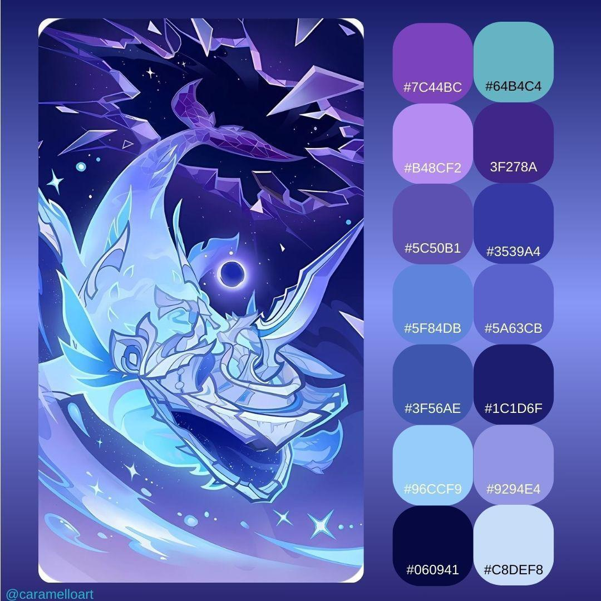

Step 0: Original Image
The raw game screenshot as input

Step 1: Canny Edge Detection
Gradient jumps between neighbors → white = edge found

Step 2: Shapes on Original
Contours classified and drawn over the original image

Step 3: Shapes on Edges
Same detections overlaid on the edge map